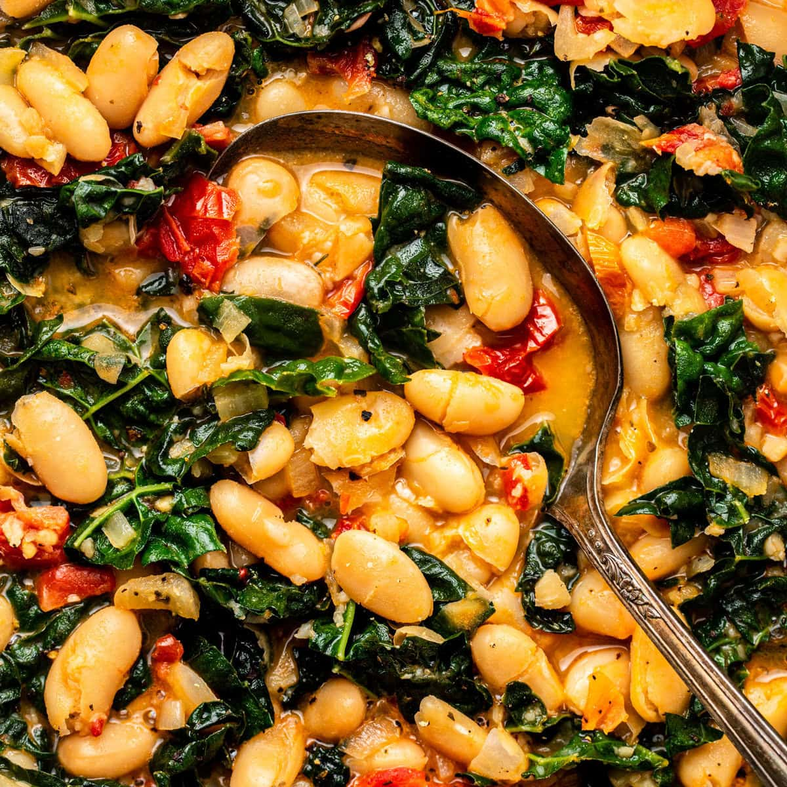

Home
Beans

Description
Instant pot beans, generally.
Ingredients
- fat
- base vegetables: mirepoix/suppengrün/holy trinity
- aromatics
- dried beans
- salty broth
- optional: hearty greens
- toppings: something sour, something fresh, something spicy, something creamy.
Steps
- Set instant pot to sautée mode and fry base veg and aromatics in fat. Add to pot in order of heartiness.
- Add beans and broth. More broth, more soup. Seal pot, cook on high pressure 1-2 hours. Let natural release at least 10 minutes.
- Add greens and cook for another 10 minutes or so depending on heartiness. Let natural release at least 10 minutes.
- Top with something good.